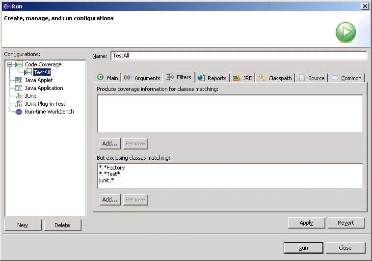
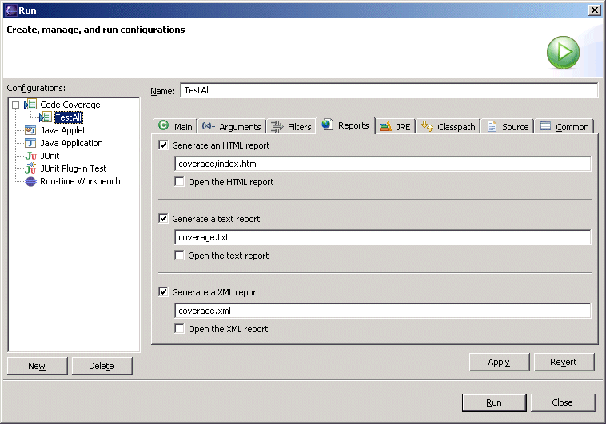

Code Coverage - Launch ConfigurationThe measurement of code coverage is supported through the addition of a new kind of launch configuration called a "Code Coverage" configuration. There are two ways of creating a code coverage configuration automatically and manually. A launch configuration will be automatically created for a class (if one does not already exist) when you select "Run Code Coverage" from the "CodePro Tools" submenu. To manually create a new launch configuration, select "Run..." from the "Run" menu to open the launch configuration dialog. Select "Code Coverage" in the list of configurations. Select "New" to create a new configuration. Once you have a code coverage configuration defined for a given class, you can use that configuration to control the set of classes for which coverage information will be gathered. This is done by opening the launch configuration dialog, selecting the configuration for the main class, and switching to the "Filters" page. The "Filters" page contains two lists of patterns the inclusion list and the exclusion list.  The patterns are simple patterns using the standard pattern matching characters "*" matches zero or more characters, "$" matches a single character. They are simple in the sense that they only match strings, not structures. For example, the pattern
will match any class name beginning with "junit.", whether or not it contains other periods. This means, for example, that the pattern will match the class
Similarly, the pattern
will match any class whose name ends in "Test" whether the class is defined in your code or in code supplied by a third party. The inclusion list specifies which classes could have coverage information recorded for them. If the list is empty, all classes are eligible. If the list contains one or more patterns, only those classes whose fully qualified name matches at least one pattern are eligible. The exclusion list specifies which of the eligible classes will not have coverage information recorded for them. A class will be excluded if it matches one or more of the patterns in the list. If the list is empty, then coverage information will be recorded for all of the eligible classes. The code coverage configuration can also be used to cause a code coverage report to be generated immediately after the measurements are recorded. Reports can be generated in three different formats HTML, text, and XML. You can also specify that you want the report to be opened (within Eclipse, if possible) after it has been generated.  It is not necessary to generate a report at the time the information is recorded because you can generate a report at any time from the Coverage View. This feature is based on technology from the EMMA
Project. |